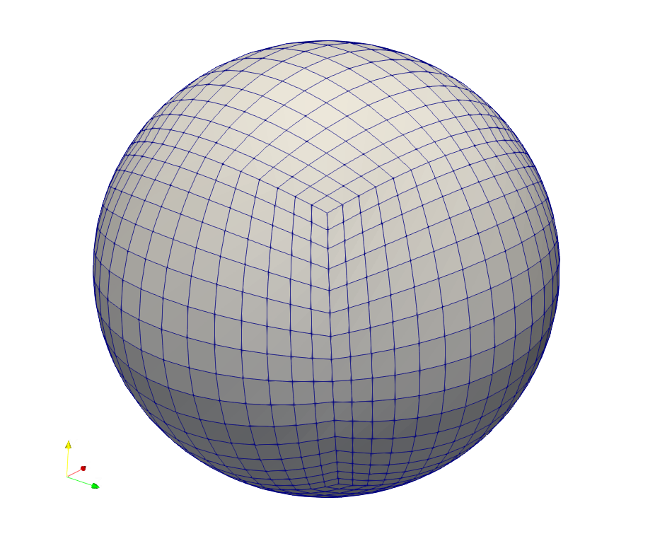

15) Case Study 2: ClimaCore#
Last time:
libCEED
Today:
ESM
A dynamical core (dycore)
ClimaCore.jl
3.1 Spatial Discretization
3.2 ClimaCore.jl API 3.3 ClimaCore.jl’s composableOperatorsand Julia broadcasting 3.4 Some perfomance plots
1. ESM#
An Eart System Moel (ESM) simulates how the Earth’s atmosphere, oceans, land, ice, and biosphere interact. ESMs are used to understand and predict how the Earth’s climate will change.
To understand Earth system models, it helps to first understand global climate models. Climate is the long-term pattern of weather variables. It includes temperature, rain and snowfall, humidity, sunlight, and wind and how they occur over many years. Climate models explain how these variables can change using mathematical analysis based on the physics of how energy, gases, and fluids move, combined with measurements taken from experiments, laboratories, and other observations in the real world.
Climate models include:
The atmosphere including clouds, aerosols, and gases, the land surface and how it is covered by vegetation, snow and ice, lakes and rivers, and soil, sea ice and the oceans.
How all these components store and move the heat and carbon that warm the Earth’s atmosphere.
Global climate models treat the Earth as a giant grid. The size of each cell in the grid is determined by the power of the computer running the model.
The goal of Earth system models is to understand how the Earth functions as a system of interdependent parts. These parts include the physical, chemical, and biological processes and interact with one another.
Recommended Reading: Department of Energy (DOE) explains Earth system and climate models.
2. A dynamical core (dycore)#
The mathematical and numerical modeling needed to solve the governing equations of the physics that drives global climate models is what constitutes a so-called dynamical core (dycore). This may include:
Meshing: discrete representation of the geometry
Numerical methods for spatial and temporal discretizations of the PDEs
How differential operators or different discretizations are composed to describe te full system
Definition and implementation of different boundary conditions

3. ClimaCore.jl#
The dynamical core (dycore) of the Climate Modeling Alliance (CliMA) atmosphere model is designed for efficient simulation of a wide range of atmospheric flows across scales. From high-resolution regional scales defined in terms of Large Eddy Simulations (LES) to global circulation models (GCM).
The main goal of the CliMA project is to build an ESM that automatically learns from diverse data sources to produce accurate climate predictions with quantified uncertainties.
CliMA’s new Earth System Model (ESM) is entirely written in the Julia programming language.
The CliMA model targets both CPU and GPU architectures, using a common codebase. ClimaCore.jl constitutes the dynamical core (dycore) of the atmosphere and land models, providing discretization tools to solve the governing equations of the ESM component models.
ClimaCore.jl’s high-level application programming interface (API) facilitates modularity and composition of differential operators and the definition of flexible discretizations: Spectral Element Method (SEM) in the horizontal direction, coupled with staggered finite differences (FD) in the vertical direction. This approach leverages the high-order accuracy and scalability of the SEM, while maintaining the computational efficiency and stability of finite differences on a staggered grid. The model’s coordinate-independent equation set allows for simulations in a variety of geometries and planetary configurations.
ClimaCore.jl also presents low-level APIs that support different data layouts, specialized implementations, and flexible models for threading, to better face high-performance optimization, data storage, and scalability challenges on modern HPC architectures.
3.1 Spatial Discretization#
Geometry:
Supports different geometries (Cartesian & spherical).
Supports covariant vector representation for curvilinear, non-orthogonal systems and Cartesian vectors for Euclidean spaces.

Space Discretizations:
Horizontal: Support both Continuous Galerkin (CG) and Discontinuous Galerkin (DG).
Vertical: staggered Finite Differences (FD).
3.2 ClimaCore.jl API#
API objects:
Domain, Mesh, Topology, Space, Field.
Field abstraction:
Scalar, Vector or Struct-valued.
Stores values, geometry, and mesh info.
Flexible memory layouts.
Useful overloads:
sum(integral of a given field across the domain),norm,mean.Compatible with DifferentialEquations.jl and ad-hoc time integrators.
Once you define a (scalar/vector) field on a space, you can easily use reduction operators, using the same syntax, whether you run on a single process, single-threaded mode or parallel:
3.3 ClimaCore.jl’s composable Operators and Julia broadcasting#
Julia broadcasting:
it applies a vectorized function point-wise to an array. Scalar values are “broadcast” over arrays;
It can do fusion of multiple operations automatically.
User-extensible API: can be specialized for custom functions or argument types (e.g.,
CuArraycompiles and applies a custom CUDA kernel if you are running on an NVIDIA GPU).
Operators (grad for gradient, div for divergence, interpolate for interpolation, etc.) are “pseudo-functions”:
they act like functions when broadcasted over a
Field, but can’t be called on a single value;can be composed and fused with function calls
Matrix-free representation, i.e., no assembly of the operator matrix, but the user only specifies the action of operator.
Composition of multiple operators is very easy and user-fiendly. Example: a Diffusion (Laplacian) operator in weak form looks like this in ClimaCore.jl’s API:
Example: Shallow-water equations#
The shallow-water equations provide a test case for atmospheric flow simulations. One of the typical examples/test cases is the flow past a mountain:

Example: Transport (advection) of tracers#
Example: barotropic instability#
A more complicated example/test case for a global circulation model (GCM) is the barotropic instability. The GIF below shows a 10-day simulation:

Other Examples:
Other examples can be found at ClimaCore.jl/examples divided by domain geometries:
column/: 1D examples in the vertical direction only. These require interpolating quantities on the staggered grid (from face values to center values and viceversa)
plane/: 2D examples on a rectangular grid
sphere/: 2D examples on a spherical grid
hybrid/: collects 3D examples with a hybrid mesh, i.e., with spectral element discretization in the horizontal direction and staggered finite difference in the vertical direction, in both Cartesian (2Dplane/and 3Dbox/) and spherical grids (sphere/)
3.4 Some performance plots#
To examine strong scaling in climate models, it is customary to increase the number of processors for several fixed resolutions, \(\delta x\), and determine the time-to-solution in symulated years per day (SYPD).
In the following plots, several resolution results are presented, from the coarsest resolution, \(103\) km (\(N_e = 30 \times 30\) horizontal elements on each cubed sphere panel), to the finest, \(13\) km (\(N_e = 240 \times 240\) horizontal elements on each cubed sphere panel), for the moist baroclinic wave test as a benchmark.
The GPUs (left) are NVIDIA A100 GPUs, and the CPU (right) nodes consist of 32-core Intel Icelake 8352Y processors, with 16 MPI ranks per CPU node.
For weak scaling studies, the problem resolution (and therefore problem size) varies with the resources in the system. Here we plot time per model timestep versus number of GPUs (left) and CPU nodes (right) for different horizontal resolutions.